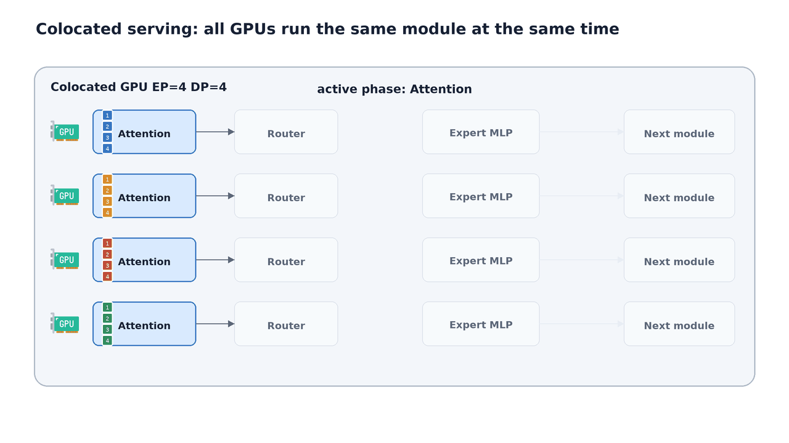
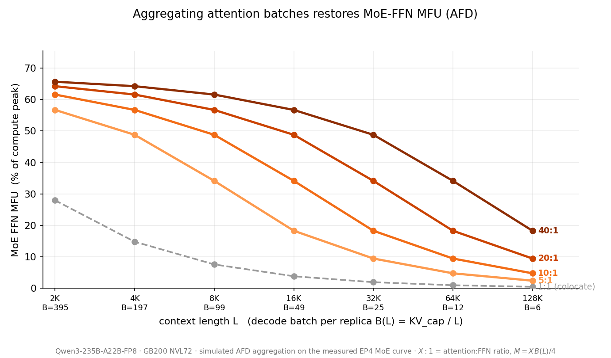
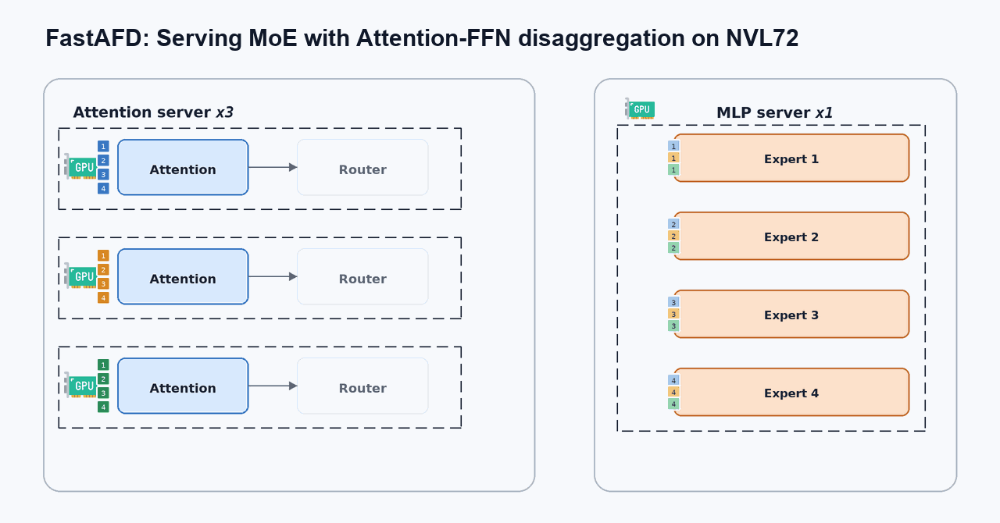
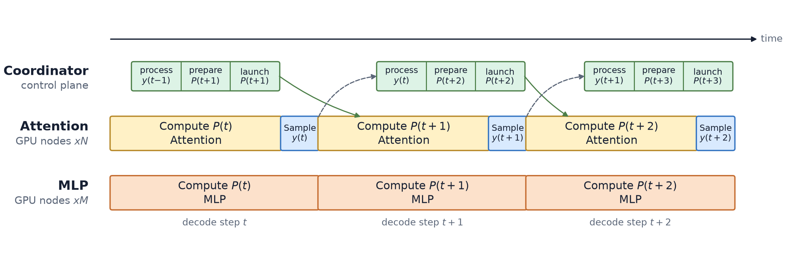
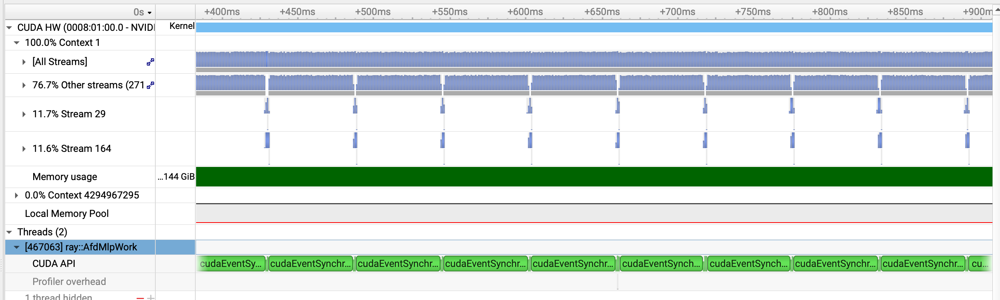
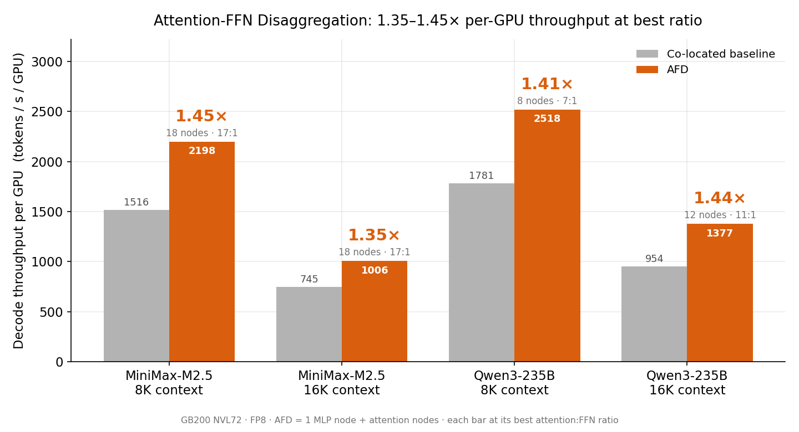
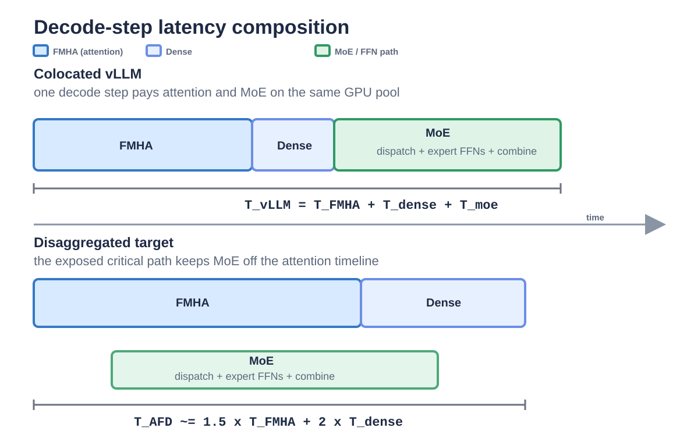
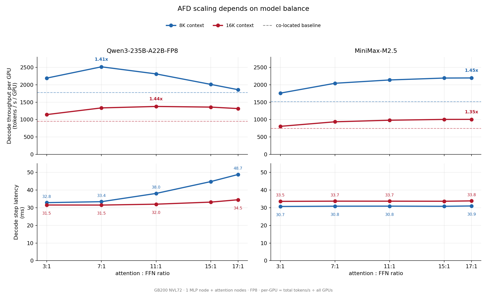
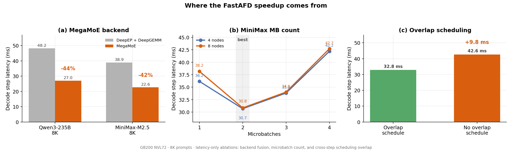

MoE 模型的解码阶段交替执行两种层：Attention 层（从 KV-cache 中计算注意力）和 MoE 层（将 batch 中的每个 token 路由到少量 expert）。当请求上下文变长时，每个请求的 KV-cache 膨胀，占满 GPU 显存。系统一次迭代能前向的 batch size 随之缩小，这个缩小的 batch 直接打击 MoE 层——token 太少，路由到每个 expert 的 token 不够，expert GEMM 变小且效率骤降，MoE 利用率断崖式下跌。
这种不匹配在共存部署中创造了一个根本性矛盾：Attention 和 MoE 层跑在相同的 Worker 上。每个 Worker 同时管理 KV-cache、计算 attention、执行路由、参与 expert-parallel dispatch、运行本地 expert、combine expert 输出。被 Admission 放行的请求数量既决定 attention 的工作量，也定义 MoE 可用的 token 池。如果 attention 所选 batch 够大，两种层都高效；一旦 KV-cache 将 batch 压小，MoE 先遭殃。
通过在恒定 per-rank KV-cache 预算下增长上下文长度、缩小 decode batch 的 MFU 测量发现：decode attention 受 HBM 带宽束缚，读取相似量的 KV-cache 使其 MFU 几乎持平；但 MoE FFN 的 expert GEMM 严重依赖当前 batch 大小——batch 小了，每 local expert 收到的 token 减少，GEMM 变小，MFU 因 expert 权重读取、路由、dispatch 的开销无法摊薄而全面下降。
 Figure 1. Decode 阶段 attention 读取每个请求的 KV-cache 历史，MoE 层按 expert 分组 token 后执行 expert GEMM。
Figure 1. Decode 阶段 attention 读取每个请求的 KV-cache 历史，MoE 层按 expert 分组 token 后执行 expert GEMM。

Figure 2. 共存 MoE 的 decode 流程。所有 GPU 在相同拓扑上依次执行 attention、路由、dispatch、expert 执行、combine。 Figure 3. 长上下文通过缩小 KV-capped decode batch 来饿死 MoE 层。在固定 GPU 和 EP 下，上下文长度 L 增长→active batch B 缩小→每 expert token 减少→MoE MFU 崩溃。
Figure 3. 长上下文通过缩小 KV-capped decode batch 来饿死 MoE 层。在固定 GPU 和 EP 下，上下文长度 L 增长→active batch B 缩小→每 expert token 减少→MoE MFU 崩溃。
增加 EP 能减少 per-GPU 的 expert 权重流量，但它不改变 MoE 的计算总量。EP 改变了每个 GPU 从 HBM 中加载多少 expert 权重矩阵，但它不改变 coexistence batch 送入 MoE 的 token 数——那个数量已由 attention admission 固定。当 EP 放大到 expert 权重流量不再是瓶颈后，继续增加 EP 的回报迅速递减，因为 dispatch 和 combine 仍然在路径上，per-GPU MoE token 数并未增加。Perplexity 的 Qwen-on-Blackwell 报告也观察到相同模式——在 Blackwell 上把 128 个 expert 分散到超过 16 个 rank 后，EP 收益止步不前。
根本问题在于：Attention 端希望用尽 KV-cache 预算来塞满 active request batch，这是它的最优解；但 FFN 端必须聚合远超出单个 attention worker 能放行的 token 数量，否则 MoE MFU 就会因每 local expert 的 token 太少而崩塌。共存部署试图用一个 batch 同时满足两者的需求，这正是矛盾的根源。
 Figure 4. EP 在固定 per-GPU 工作量下减少 expert 权重流量，但收益很快到底。MoE FFN 利用率仍然取决于每 expert token 数，dispatch/combine 不会消失。
Figure 4. EP 在固定 per-GPU 工作量下减少 expert 权重流量，但收益很快到底。MoE FFN 利用率仍然取决于每 expert token 数，dispatch/combine 不会消失。
Attention-FFN Disaggregation（AFD）改变的是部署位置，不是模型计算。Attention Worker 持有 KV-cache、attention、路由、采样等请求面逻辑；FFN Worker 接收路由后的 token、执行 MoE FFN、返回 layer 输出。每层中，attention 侧的路由器产生 expert 分配，路由后的 token batch 成为 attention decode 和 FFN 执行之间的边界。
这个边界解开了共存布局的耦合。Attention admission 仍由 KV-cache 容量和目标上下文长度决定；但 FFN 侧不再依赖某个 Attention Worker 的 KV 受限 batch，它从多个 Attention Worker 聚合路由 token 后再执行 grouped expert GEMM。固定 FFN Worker 池时，聚合效应增加每 local expert 看到的 token batch，将 MoE 利用率提升到共存基线之上。
Attention Worker 拥有请求状态和请求推进——KV-cache、QKV 和 output 投影、路由器和采样。它只持有模型权重的很小一部分（FFN Worker 持有 >90% 的 expert 权重）。FFN Worker 存储 expert 权重并执行 MoE 计算，不拥有 KV-cache、路由决策和采样。

Figure 5. 聚合是 AFD 提供的利用率杠杆。固定 FFN Worker 池，聚合更多 Attention Worker 扩大每 expert batch，将 MoE 利用率提升到共存基线之上。
Figure 6. Attention-FFN 分离的 token 流。Attention Worker 执行 attention 和路由，FFN Worker 将路由 token 聚合为 expert 执行。AFD 将 MoE batch 聚合的好处与跨角色 token 移动的开销做交易。每层中 Attention Worker 通过 M→N dispatch 向 FFN Worker 发送路由 token，FFN Worker 通过 N→M combine 返回 expert 输出。如果这个边界是串行的，每层都要等 dispatch 和 combine 在关键路径上往返，大 expert batch 带来的收益会全部被通信吞掉。
MegaScale-Infer 给出了一个理想化的三条件模型：令 m = micro-batch 数，L = MoE 层数，Tₐ = attention 计算时间，Tₑ = MoE 计算时间，T𝒸 = 单向通信时间。稳定态 micro-batch period 为 T𝒻 = max(Tₐ, Tₑ)。一个理想的 ping-pong 流水线需要三个条件同时成立：① Attention 和 MoE 计算量平衡（Tₐ ≈ Tₑ）；② 单次通信时间短于流水线周期（T𝒸 < T𝒻）；③ microbatch 数量足够隐藏双向通信。FastAFD 在 GB200 上对这些条件做逐一检验。

Figure 7. AFD microbatch ping-pong 流水线。dispatch、expert 执行、combine 和 attention 计算在不同 microbatch 间重叠。GB200 NVL72 是一个机架级系统，72 块 Blackwell GPU 在一个 NVLink 域内互联。每块 GPU 192 GB HBM3e，整机架 720 PFLOPS FP8 Tensor Core 算力、13.4 TB HBM3e 总计带宽 576 TB/s、NVLink 带宽 130 TB/s。机架级的 NVLink/NVSwitch 带宽让 AFD 在实践中可行——路由 token 可以在 Attention Worker 和 FFN Worker 之间快速移动。
但硬币的另一面是：Blackwell 的 FP8 算力和 HBM 带宽也大幅增强了共存基线的实力。在完整的 NVL72 机架上，高机内带宽和宽 expert parallelism 本身就已让共存 MoE 服务极具竞争力。AFD 不能仅靠分离部署取得优势，还必须通过运行时优化把通信和调度开销完全隐藏掉。这就是 FastAFD 的核心挑战。
FastAFD 基于 Mini-SGLang 构建，Ray 启动 Attention Worker、FFN Worker 和一个逻辑 Coordinator。每 4-GPU 节点托管 4 个 Worker。Coordinator 为每个 decode step 生成调度计划：哪些请求活跃、哪些 micro-batch 和 buffer slot 由每个 rank 使用、哪些 attention 和 FFN peer 参与本轮。
FastAFD 的每项优化精准打击一种成本：① 用 DeepEP 风格的 dispatch/combine 将 token 移动保持在 GPU 侧并通过 microbatch 管道与计算重叠；② MegaMoE 融合 dispatch、expert GEMM 和 combine 为一个统一 kernel，同时 CUDA Graph 捕获 decode path 的其余部分；③ zero-overhead 调度让 Coordinator 在 Worker 回放当前 CUDA Graph 的同时预先生成下一步计划。
在 GB200 NVL72 上，Attention 和 FFN Worker 共享一个 NVLink/NVSwitch 域，所以边界是机内 GPU-to-GPU token 移动。FastAFD 把 payload 和 control 都留在 GPU 上——重用 DeepEP 的 dispatch/combine kernel。它通过一个薄适配层将 AFD 映射到 DeepEP 的对称 EP 模型：在所有 attention 和 FFN rank 上形成一个 process group，给每个 attention rank 分配一块虚拟 expert 槽位（router 永远不会选到它），在 dispatch 前将真实 expert ID 重映射到 FFN rank 的范围。dispatch 和 combine 作为 GPU kernel 运行，事件同步，CPU 不参与 decode 关键路径。代价是 MegaScale-Infer 刻意避免的——GPU-side communication 消耗 SM。下一节展示 FastAFD 如何通过融合 kernel 将这个成本转化为重叠。

Figure 8. Coordinator 在 Worker 执行当前 step 时预生成下一步的 metadata，通过 ZMQ 通信。GPU 侧 zero-overhead 调度将 CPU 控制路径完全隐藏。解码阶段 MoE 层的成本不仅仅是 expert GEMM。路由打包、token 搬运、expert 投影与激活、combine 和 scatter——作为独立 kernel 和通信 launch 实现时，每个边界都产生中间缓冲区和元数据，增加事件或流同步。DeepGEMM 的 MegaMoE 在一个 MoE 层内消除了这些边界：它将 EP dispatch、expert GEMM（含 SwiGLU）和 EP combine 融合为一个 kernel，在 Tensor Core 计算的同时通过 NVLink 移动 token。
在 AFD 边界上角色是分离的，所以 FastAFD 将 mega-kernel 分裂为两个角色 kernel。Attention 侧 kernel 每层每 microbatch 执行一次：量化 hidden states 到 FP8、发布路由元数据让 FFN rank 可以 pull 结果、等待 expert write-back、将 top-k expert 输出 reduce 为 layer 输出。它占用 Blackwell GPU 148 个 SM 中的 24 个，剩余部分留给 attention path 并发运行。FFN 侧 kernel 从所有 attention rank pull FP8 token、执行 grouped expert GEMM（SwiGLU 融合进 GEMM 流水线）、将 BF16 输出推回每个源 rank 的 combine buffer。所有移动通过预分配对称缓冲区进行，无需逐次握手。
由于 FFN Worker 只运行 receive-compute-return 循环，FastAFD 为每个 decode step 启动一个持久 FFN 侧 kernel——它拥有整个 GPU，服务所有 MoE 层和所有 microbatch lane，通过描述符表读取每层权重，消除了 per-layer 和 per-microbatch 的 launch 开销。Attention 侧故意保持 per-layer——attention rank 在边界间仍需执行 KV-cache attention、KV 更新和残差/归一化工作。消融测试表明，这种融合在 Qwen3-235B 上比独立 DeepEP+DeepGEMM 路径减少 44% 的 8-node decode-step 延迟，MiniMax-M2.5 上为 42%。

Figure 9. Nsight Systems trace：Coordinator 的 decode step 调度完全被 GPU 执行覆盖，不影响 decode step 周期长度。跨多个节点的多个 Attention 和 FFN Worker，AFD 通常是跨节点系统而非单节点优化。每个 decode step 都需要 CPU 侧调度计划。Coordinator 不计算路由或驱动数据路径——那些留在 Worker 和 GPU stream 上。FastAFD 的思路继承 SGLang 的 zero-overhead scheduler：CPU 侧调度跑在 GPU 执行一步之前，准备好 metadata 后通过 ZMQ 发布，而 Worker 正在用当前 plan 回放 CUDA Graph。ZMQ 仅携带控制指令和返回的采样 token，不携带路由决策或数据路径工作。这消除了 decode 关键路径上的集群级调度 round-trip。
实验评估两个开源的 FP8 MoE 模型：Qwen/Qwen3-235B-A22B-FP8（235B 总参，22B 激活，94 层，128 expert，每 token 8 个激活 expert）和 MiniMaxAI/MiniMax-M2.5（约 230B 总参，10B 激活，62 层，256 个 local expert）。基线是 vLLM 在共存 MoE 布局下运行 DP+EP。每个 GB200 NVL72 机架连接 18 节点（每节点 4 GPU），FastAFD 使用 M 个 Attention 节点 + 1 个 FFN 节点。
指标为 per-GPU decode throughput：每步生成的 token 数除以 step 延迟和总 GPU 数（包括 FFN GPU）。vLLM 基线在单节点上测量，共存 DP 节点独立服务请求，因此 per-GPU 吞吐在大节点数下不变。

Figure 10. FastAFD 对比 vLLM 共存基线的 per-GPU decode 吞吐。Qwen3-235B 提升 1.41×（8K）和 1.44×（16K）；MiniMax-M2.5 提升 1.45×（8K）和 1.35×（16K）。Per-GPU decode throughput 的加速可以分解为三个因子的乘积：batch expansion（内存容量增益）、FFN-node tax（拓扑损耗）和 latency ratio（step 延迟比）。Batch expansion 来自 expert 权重被移除后 Attention GPU 获得的额外 KV-cache 空间——在所有 workload 中这个比例为 1.5×（Qwen 的 per-Attention-GPU batch 从 64→96，MiniMax 从 48→72）。
关键洞察是，当 FFN 侧被完全隐藏时，FastAFD 的 decode-step period 等于 attention 侧的周期。Attention 侧有两部分工作：FMHA（融合多头部 attention kernel，HBM 带宽绑定）和 dense work（密集投影、路由、归一化等小 kernel）。FMHA 时间随 KV 流量线性增长（1.5× batch → 1.5× KV 流量），而 dense work 主要跟踪 launch 次数而非 batch 大小，所以每个 microbatch 承担一次这个开销。
FFN 侧保持隐藏的条件是关键。MiniMax-M2.5（约 10B 激活参数）在整个测量范围内 stay hidden——其 FFN 侧完成得比 attention 更快。Qwen3-235B（22B 激活参数）在某个点跨越了边界。平衡不是最优目标：FFN 闲置最多浪费了 1 个节点，而 FFN 暴露（Tₑ > Tₐ）会减慢每个 decode step，后者随 M 增长而恶化。FastAFD 选择运行在 Tₑ ≤ Tₐ 的最大 M 点，用有界闲置换取鲁棒性。
消融实验量化了每个机制的作用。MegaMoE 融合在 Qwen3-235B 上减少 44% 的 8-node 延迟，MiniMax-M2.5 上为 42%。Zero-overhead 调度移除后吞吐损失 23%。mb=2 是最优值——mb=1 让通信暴露在关键路径上，mb=3/4 只增加小 kernel 的 m 倍复制而不隐藏更多。

Figure 11. Step 分解与 AFD 延迟预测模型。FMHA、dense work 和 MoE 三部分的时间构成 vLLM 基线 step，AFD 移除 MoE 部分。
Figure 12. AFD 加速在不同模型上趋势不同。MiniMax（小激活参数）在所有 M:N 比下保持 FFN 侧隐藏，延迟几乎持平；Qwen（大激活参数）越过最优比后 step 延迟上升。FastAFD 的操作点说便宜但不自动可达。在三个因子中运行时只能移动一个（T_AFD）。MegaMoE 保持 Tₑ 足够小以隐藏——没有融合的话 FFN 侧提早暴露，可行的 M 更小。Zero-overhead 调度保持 step period 在 CUDA Graph 长度：禁用跨 step 重叠后，Qwen3-235B 4-node 8K step 从 32.826 ms 增长到 42.612 ms，23% 的吞吐损失使配置低于共存基线。mb=2 是最低有用值——mb=1 暴露通信，mb=3/4 只增加小 kernel 开销。
在这个结构验证后，将预测扩展到异质硬件就是替换参数：移除 FFN-node tax，从延迟比中移除 MoE 时间，剩下就是纯 attention+dense 对共存的比例。
NVIDIA Vera Rubin + LPX/LPU 将 AFD 从 GPU 部署问题变成了硬件边界。Rubin GPU 处理 prefill、decode attention、KV-cache 密集型工作和高并发服务，而 LPX 加速延迟敏感的 FFN/MoE 执行。Rubin 每 GPU 高达 288 GB HBM4、22 TB/s HBM 带宽、3.6 TB/s NVLink 6；LPX 机架有 128 GB SRAM、40 PB/s SRAM 带宽、640 TB/s scale-up 带宽。这正是 AFD 分离的两种资源。
在没有实际硬件的情况下，基于 GB200 实测的 step 分解进行推算。假设两个 LPX 机架对应一个 Rubin 机架（FP8 权重可放入 LPX SRAM）。移除 FFN-node tax 后，batch expansion 降至约 1.25×，但在线性 attention 模型下 batch 因子互相抵消，加速简化为延迟组成比。根据 GB200 vLLM 的 attn:dense:moe 比例推测，仅 MoE 分离时可达 1.57–1.75× 加速。若将 dense 工作也移到 LPX（更激进的边界），Rubin 暴露的 step 接近 pure attention，加速可达 2× 以上。
① **在同一个 NVLink 域内，通信应该留在 GPU 上。** FastAFD 将 MegaScale-Infer 风格的 M:N 架构带到 GB200 NVL72，而 NVLink 翻转了第一个设计选择——MegaScale-Infer 将通信控制路径放在 CPU 上以节省 GPU SM（对 RDMA 集群合理），但 GB200 上 SM 预算并不稀缺：attention 侧边界 kernel 只占用 Blackwell GPU 148 个 SM 中的 24 个（约 16%），FFN 侧 kernel 专享整块 GPU。融合 dispatch/combine 用这个 SM 切片换来重叠，并将整个 decode step 保持在 CUDA Graph 内。
② **平衡不是正确的目标。** MegaScale-Infer 的 Tₐ ≈ Tₑ 处在便宜失败模式和昂贵失败模式的边界上。FFN 闲置浪费最多 1 个节点，而 FFN 暴露减慢每一步且随 M 增长而恶化。FastAFD 选择 Tₑ ≤ Tₐ 的最大 M 值运行，用有界闲置换取鲁棒性。
③ **两个 microbatch 就够了。** mb=2 已能隐藏双向通信，mb=3/4 只乘以小 kernel 的开销而不隐藏更多。
④ **加速来自容量，而非延迟。** FastAFD 的 decode step 时长与 vLLM 相当（延迟比≈1），变化的是每 GPU 的承载量：Attention GPU 卸掉 90%+ 的权重，携带 1.5× 的 resident request，在扣除 FFN-node tax 后 per-GPU 吞吐提升 1.35–1.45×。
FastAFD 是一个 serving prototype，而非新的模型架构。它目前仅评测了 GB200 NVL72 上的稳态 decode step。下一步是扩展到 DeepSeek、Kimi、Qwen3-Next、GLM、StepFun 等更多开源大型 MoE 模型家族，以及将 AFD 与 PD 分离、推测解码、准入控制、请求迁移和 SLO 感知调度等生产级组件组合。Vera Rubin + LPX/LPU 的推算是基于实测的预测，需要实际硬件验证。FastAFD 源代码和脚本将在 hao-ai-lab/FastAFD 发布。
参考：https://haoailab.com/blogs/fastafd/